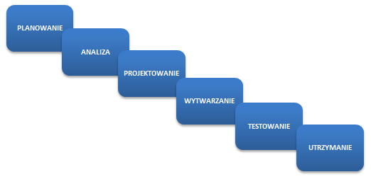
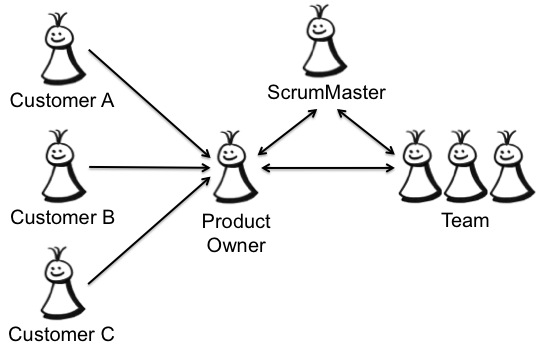
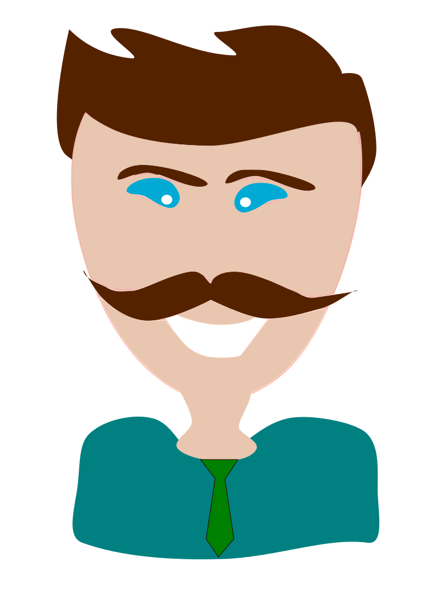
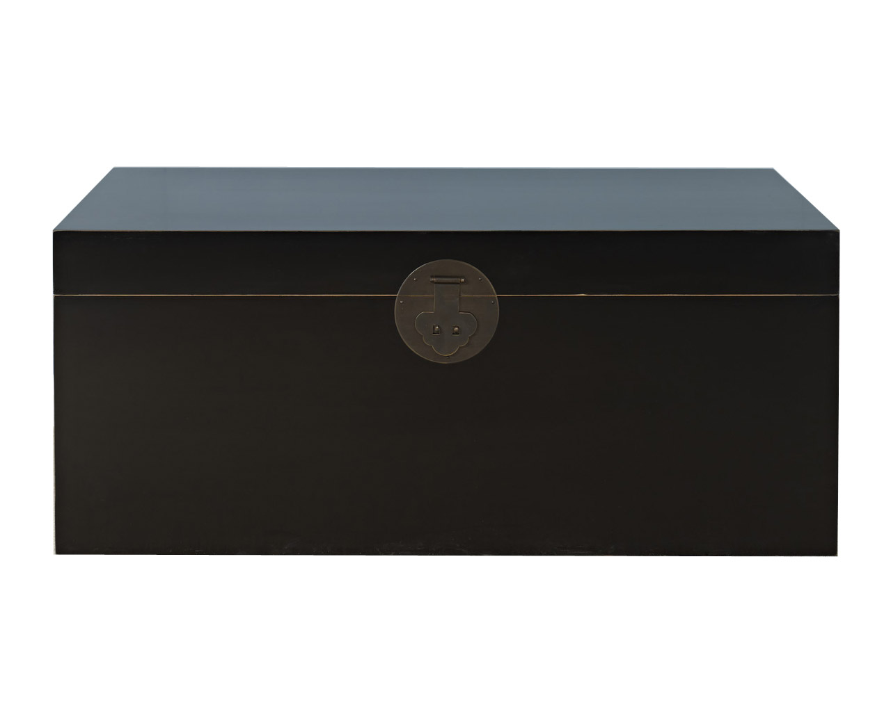

Śladami faraonów
Pragmatyczna podróż
po piramidzie testów
Quality Excites - 2014 © License:
CC BY-ND 3.0 PL
Testy oprogramowania
Kto? Co? Jak?
Tester?

Waterfall
Agile

Agile vs Waterfall
- Łatwość wprowadzania zmian
- Szybka adaptacja
- Większa kontrola ryzyka
- Szybciej dostarczamy wartość
- Dostarczony produkt ma wyższą jakość
Zespół Agile
Rola i oczekiwania wobec testera
- Każdy dba o jakość
- Testowanie jest ciągłe
- Testowanie nie wstrzymuje dostarczenia produktu
- Tester jest odpowiedzialny za zgłaszanie feedbacku
- Testy opisują oczekiwania i wymagania
- Brak czasu na ręczne testy regresji
Kiedy zacząć testowanie?
Jak najwcześniej...
Tylko co testować?
Pracujemy w Agile

UCD & Agile

Co dostarcza UCD?
Persona
- Zdjęcie
- Opis - wiek, zawód, krótkie wprowadzenie
- Potrzeby
- Cele
- Co go denerwuje?
Korzyści posiadania persony
- Użytkownik staje się namacalny
- Odwołujemy się do konkretnej osoby
- Nie mówimy użytkownik
- Wykorzystujemy je do tworzenia user stories
User Story
- Technika opisywania wymagań
- Krótkie historyjki opisujące akcje do wykonania w systemie
- Zrozumiałe dla zespołu i dla klientów
- Ważne są cele użytkownika, nie właściwości systemu
Konstrukcja user story
- Jako → persona
- Chcę → wykonać akcję - ale nie rozwiązanie!
- Żeby → osiągnąć coś ważnego dla mnie
Wymagania vs user story
- Produkt powinien być biały
- Produkt powinien być podłączony do prądu
- Produkt powinien opiekać z góry i z dołu

Wymagania vs user story
Jako Kamila,
Chcę zjeść tosta z serem w środku,
Żeby zaspokoić głód

Krystian Kocur
- DANE: Krystian Kocur
- ZAWÓD: Prezes firmy
- WIEK: 42 lata
- ADRES: Gliwice
- WYKSZTAŁCENIE:
Studia magisterskie - Chemia -
ŻYCIE OSOBISTE:
- Żonaty
- Dwoje dzieci (11 i 14 lat)
- Uwielbia swoją daczę na mazurach
- Uzależniony od telefonu komórkowego i GPS
- HOBBY: Tenis, Film, Podróże
- MOTTO:
Czas to pieniądz.
-
NIE LUBI:
- Bezsensownych spotkań
- Nieplanowanych wizyt w sklepie
- Telefonów od żony z przypomnieniem co ma kupić
-
CECHY / OTOCZENIE:
- Zabiegany
- Nowoczesny
- Konkretny
- Wszystko planuje
-
OCZEKIWANIA:
- Pomocna dłoń w codziennych obowiązkach.
- Łatwość zapisywania zadań.
Zawsze pod ręką
.- Wsparcie w organizacji.
Nasz klient to bogaty, zmanierowany prezes firmy farmaceutycznej, który chce robić efektywnie zakupy.
Ma niestety problemy z pamięcią. Zawsze zapomina co ma kupić, lecytyna nie pomaga. Pomóc w zapamiętywaniu ma prosta aplikacja webowa.
Dzięki niej nie będzie musiał z pustymi rękami wracać do domu, gdzie czeka na niego wściekła żona.
Zbieramy wymagania!
Rozmowa z product ownerem
ZADANIE 1
Użytkownik może się zalogować na własne konto
Jako Krystian,
Chcę się zalogować do aplikacji,
Żeby zobaczyć swoje listy zadań
ZADANIE 2
Lista zamknięta jest niedostępna dla użytkownika
Jako Krystian,
Chcę aby moje zamknięte listy nie były widoczne,
Żeby nie wprowadzały mnie w błąd
ZADANIE 3
Lista jest zamknięta kiedy wszystkie jej elementy są zrobione
Jako Krystian,
Chcę zamknąć wszystkie elementy znajdujące się na liście,
Żeby lista została automatycznie zamknięta i nie wprowadzała mnie w błąd
Język Domenowy
Kto? Co? Kiedy?
Przykład
- Zadanie zrobione / Zadanie zamknięte
- Zadanie nie zrobione / Zadanie otwarte
- Zamknięta lista
- Otwarta lista
Piramida testów

Podział testów
- Testy biało-skrzynkowe
- Test czarno-skrzynkowe
Black Box Testing
BBT - przykład
Test end to end funkcjonalności aplikacji: przesłanie wiadomości od jednego użytkownika do drugiego.
- Loguję się jako użytkownik X.
- Naciskam przycisk "wyślij wiadomość".
- Wybieram z menu rozwijanego użytkownika Y.
- Wpisuję treść wiadomości.
- Naciskam przycisk "wyślij".
- Wylogowuję się.
- Loguję się jako użytkownik Y.
- Naciskam na przycisk "Nowe wiadomości".
- W liście wiadomości znajduje się nowa wiadomość od użytkownika X.
- Naciskam na najnowszą wiadomość.
- Wiadomość zawiera treść, którą wysłał użytkownik X.
White Box Testing
WBT - przykład
- Załóżmy istnienie obiektów `acc1` i `acc2` typu `BankAccount`.
- Inicjalizuję obiekt `acc1 = BankAccount.withBalance(200)`.
- Inicjalizuję obiekt `acc2 = BankAccount.withBalance(10)`.
- Dokonuję wywołania `acc1.transfer(acc2, 50)`.
- Oczekuję, iż `acc2.balance() == 60`.
- Oczekuję, iż `acc1.balance() == 150`.
Acceptance tests
Testy akceptacyjne
- Testy integracyjne.
- Testy funkcjonalne.
- Testy regresyjne.
- Testy domeny i logiki.
BDD
- Sposób zapisu
- Mocno zorientowany na Agile
- Story BDD
- Spec BDD
Story BDD
Opis funkcjonalności i logiki biznesowej z punktu widzenia dostarczonej wartości dla klienta.
To właśnie jeden ze sposobów opisu szczegółów technicznych w języku domenowym, zrozumiałym nawet dla nietechnicznego klienta.
Story BDD - Formaty
-
Connextra
AS A ... jako kto I WANT ... wykonać cel SO THAT ... osiągnąć korzyść
-
Feature Injection
IN ORDER TO ... osiągnąć korzyść AS A ... jako kto I WANT ... czynność / cel
-
Given/When/Then
-
GIVEN ... warunki początkowe WHEN ... wykonując czynności THEN ... weryfikacja
-
Spec BDD
Niskopoziomowy opis implementacji konkretnego fragmentu.
TDD 2.0
ZADANIE
Unit tests
Testy jednostkowe
- Podstawowa warstwa testów
- Dostarcza najszybciej informację zwrotną
- Najlepszy stosunek: KOSZT / ZYSK
Unit tests
Testy jednostkowe
- Testy biało-skrzynkowe
- Wymaga dużej samodyscypliny
- Unit to jednostka funkcjonalna
TDD

ZADANIE
Automated GUI tests
Testy automatyczne GUI
- Zautomatyzowane scenariusze testowe.
- Głównie testy eksploracyjne.
- Nie za dobry stosunek: KOSZT / ZYSK
GUI - Test Runner

GUI - Page Object
- Odzwierciedlenie strony w kodzie
- Relacja dziedziczenia
- W klasie bazowej znajduje się ogólna implementacja
- W klasie pochodnej, szczegółowa implementacje
GUI - Selektory
-
CSS
#id-konteneradiv.z-klasą-cssinput[type='button']
-
XPath
/html/body/section/ul/li/div/*[contains(text(), 'TEKST')]/../preceding-sibling::input
ZADANIE
Specification By Example
Acceptance Test-Driven Development
- Podejście łączące BDD i wymagania czytelne dla klienta
- Wykonywalna specyfikacja uruchamiająca kod
- Wiele warstw testów współgrających ze sobą
Executable Specification
Fitnesse

Korzyści płynące z automatyzacji
- Agile stawia na automatyzację.
- Możliwość przetestowania wielu zestawów danych.
- Minimalizacja żmudnej pracy.
- Szybka informacja zwrotna (GO / NOT GO).
Utrzymanie testów
- Testy czarno-skrzynkowe się łatwo pisze ...
- ... i ciężko utrzymuje.
- Testy biało-skrzynkowe pisze się gorzej ...
- ... i jeśli są źle napisane, utrzymuje się je równie źle.